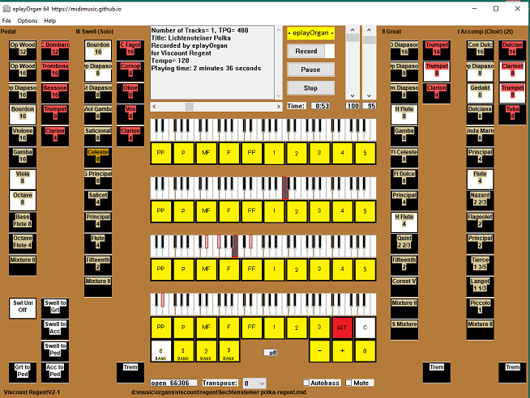

EplayOrgan, Multi Purpose Translating Virtual Pipe Organ
64bit Versions 4.2.0.2 and 4.2.0.2x plus 32bit Versions 3.9.0.0 and eplayOrganPortable Version 3.1.0.0 all available for download
EplayOrgan is a multi purpose sample based virtual pipe organ intended to be played by organists and
versatile enough to be useful to everybody with an interest in organs. It will translate, play and record
organ midi files for most organs in real time. It will load and be playable almost instantly and does not
need an expensive computer with huge amounts of memory.

This organ was designed and tested on a 64 bit Windows 10 system but was always intended
to be portable and versatile in that it will run on 32 or 64 bit Windows systems back to and including Windows XP.
It will also run on any Mac or Linux system under Wine. You can run Windows on any Mac (using Bootcamp) and eplayOrgan runs perfectly. Latency is negligable under Windows.
A "Portable App" version of eplayOrgan is now available, eplayOrganPortable. This also runs on any Windows system
or any Mac or Linux system under Wine.
Main Features
Easy and quick to install.
All included organs are fully set up, just connect one or more midi keyboards, or a multi channel console,
select your organ and begin playing.
The correct midi channels are automatically set up for each organ.
The keys, stops, pistons and two swell indicators are all fully animated and their state is easily visible.
Hardware stop and expression controls may be input in Universal NRPN format. The same NRPN's will work for all organs.
Optional Second Touch is available on all organs. See the second touch keys move to show exactly what is happening
Optionally velocity sensitive on every rank. Useful for piano ranks.
All stops are coloured and may be "swiped" open or closed, Manuals have a fully chromatic "swipe".
The stops have automatically selected font sizes, varying with display size which makes them easy to read.
Coupled keys move to show their state.
See the Wurlitzer Band Organ keys and stops moving for the first time ever.
Organs included:-
Allen: Generic Church Organ and a Universal Organ which is used for translating organ midi files.
Miditzer: 150, 160, 216 and 260 cinema organs
Wurlitzer: 125, 150 and 165 band organs
Hauptwerk: St Anne's Mosely, Burea Church, Paramount 310, Armley Schulze Leeds, Willis Salisbury, Cavaille-Coll Caen both nrpn
and sysex, Eisenbarth Friesach
Estey: Church Organ
Viscount: Regent
Grand Orgue: Barton3-7, demoV1 and Clavecin-Blanchet_2cl (harpsichord)
Plus many more organs, see below.
More organs can be easily added.
A stop number display simplifies the making of new organs.
Outputs from any organ can be translated to Universal Organ format and optionally recorded.
Inputs or recordings in Universal Organ format can be translated to any other organ format and optionally recorded.
Built in Organ Designer. New organs can be imported and existing organs exported.
Optional individual .sf2 sound font for each division.
Includes my eplayUniversalOrgan.sf2 sound font and Rich Olsen's Band Organ fonts.
Up to four stereo audio outputs with adjustable reverb and unlimited polyphony.
Built in midi player and recorder using the latest technology.
Multiple playlists. Provides continuous playing of multiple midi files. Playing can be controlled remotely. No other VPO has this feature.
Built in two tone metronome.
Directly plays Wurlitzer Band Organ and Estey e-rolls.
There are 4 Banks of 38 Divisional Pistons.
A piston stepper selects groups of pistons in order. These groups become General Pistons. This makes playing the organ much easier.
All piston settings can be saved to named files and restored at will.
You are permitted to use eplayOrgan on contrebombarde to upload and demonstrate your work.
Tremolo is fully activated and working on all organs. Each division has separate control.
Autobass is optionally available on Great Division and automatically plays pedals. No other VPO has this.
Swell and expression pedal response is tailored to accurately simulate shutters opening and closing on a real organ.
Automatically set up for each organ.
Key inputs from manuals or console can be automatically transposed while playing.
You can use a multi channel MIDI organ console. You can play and control all organs from this without any setting up.
LCD display of stepper and playlist positions is supported (Compatible with HW and GO displays).
eplayOrgan can Read, Write and Play Grand Orgue (SMPTE) midi files.
This organ is perfect for translating organ midi files to play properly on other organs, no other organ can do this.
See: Organ Midi File Translation for details. New organs can be imported and existing organs exported.
All Hauptwerk midi file formats are supported. Stops may be selected using midi nrpn or sysex events.
Master couplers may be used. All will be recorded and played, as appropriate, in midi files.
All GrandOrgue organs are supported via loadable settings files. See below.
You can download and run GrandOrgue free from sourceforge. It will run on Windows, Mac or some Linux systems.
There are many free samplesets available, some of these may be converted to .sf2 format (using Polyphone) to play on eplayOrgan64.
DOWNLOADS: eplayOrgan and eplayOrganPortable are completely free to download and to use.
Also see midimusic on Sourceforge: - you can download eplayOrgan from there and/or use the "Discussion" section to make your own comments.
Sourceforge download site.
Download eplayOrgan64 setup_eplayOrgan64V4_2_0_2.zip
MD5 96f6cac68011520f967b106a984b3708
Download eplayOrgan64 setup_eplayOrgan64V4_2_0_1.zip
MD5 696dd3806cf2eccf95fed490f504aefa
Download eplayOrgan64 setup_eplayOrgan64V4_1_0_1.zip
MD5 84cd1510c583efa44ca9985f9478ab32
A 64 bit version of eplayOrgan with a Windows Installer which can use very large .sf2 and .sf3 soundfonts and give sound quality comparable with Grand Orgue and Hauptwerk.
It contains my purpose designed organ sound font with the best free note and release samples I can find. This font is now used in all organs. V4.2 has many improvements
including better graphics and a re-designed menu system to improve playability.
Download eplayOrgan64 eplayOrgan64V4-2-0-2x.zip
MD5 2f37d9b8027190d534db324c22c7ac98
A self contained 64 bit version of eplayOrgan which can use very large .sf2 and .sf3 soundfonts and give sound quality comparable with Grand Orgue and Hauptwerk.
Download 32 bit eplayOrgan. setup_eplayOrganV3_9_0_0.zip
MD5 2f395b4002416fbf4e8128e1d9d06a9a
Same as 64 bit version 4.2.0.2 but for 32 bit systems.
The Portable App installer decompresses the eplayOrganPortable files and copies them into a folder of your choosing. To install two
copies of eplayOrganPortable simply run the installer again and copy the files into a different folder.
You can install eplayOrganPortable on to a memory stick and you can then plug this stick into any computer and run it from the stick.
When you unplug the stick nothing on the computer will have been changed (unless you have purposely saved some eplayOrgan midi files
on that computer).
You can also install eplayOrganPortable into a "cloud" folder and it will run from there.
To install eplayOrganPortable on Mac or Linux computers, first install Wine, then install eplayOrganPortable into a folder on drive Z: (The other drives
will be hidden and inconvenient to use.)
Alternatively or additionally, if Wine is installed you can just plug in a memory stick made for Windows, as above and the organ will run when you double
click the .exe file.
Note: The Portable Apps Platform works properly only on Windows computers.
Additional Organs you can download and import into eplayOrgan
These organs include Master Couplers where appropriate
Note: Updated for eplayOrgan V3.2.0.1 or later but not yet for eplayOrgan64V4.1.0.0.
Import these settings files into your GrandOrgue organ to gain support as indicated.
Use eplayOrgan to drive the GO organ or use eplayOrgan to record midi files for playing on GO.
These settings files are easy to make. See: Organ Midi File Translation for details.
If you use eplayOrgan to make midi files to play on GO - you must load one of the settings files below, or a similar file,
to tell the GO midi player how to set stops and swell pedals.
Note: The Barton's Snare Drum is much too loud; reduce it's Gain from 22 to 6db for the best results.
Burea_Church_Ext2.02.sf2 (141MB) should be available for download from the web, it is associated with jOrgan.
Many other sound fonts in .sf2 format are available on line for download. Any of these can be used with eplayOrgan.
Various videos of eplayOrgan in action
All of these videos were recorded with older versions of eplayOrgan.